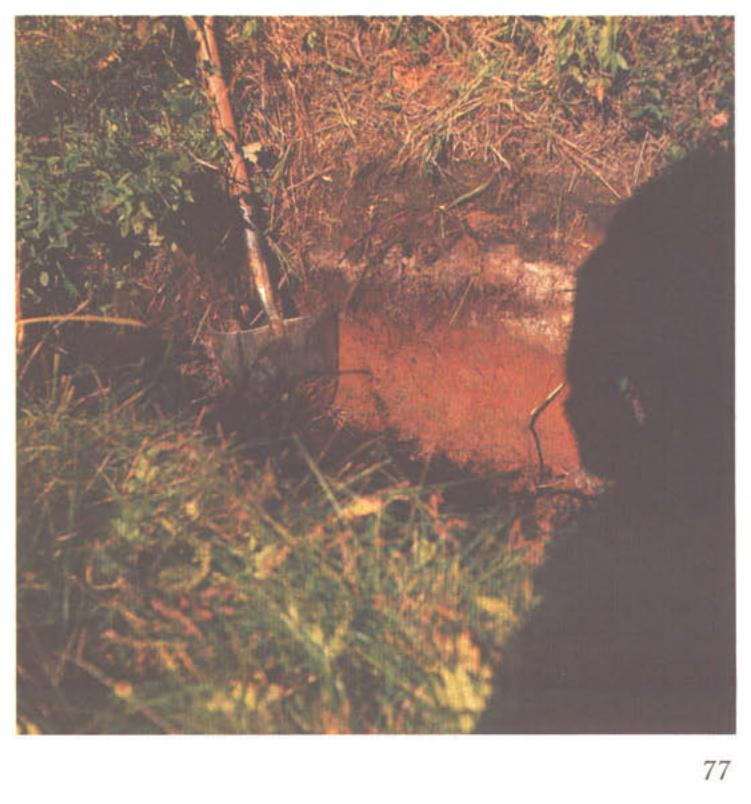

Identification & Caractéristiques Générales
La série Saint-Méthode s'est développée sur des dépôts de till morainique basal ou ablationnel, à texture généralement limono-sablonneuse à sablo-limoneuse, mis en place au cours du Quaternaire dans les régions physiographiques du Bouclier canadien et des basses-terres du Saint-Laurent. Ce matériau parental est caractérisé par une pierrosité et une caillouteux variables, souvent modérées à fortes en surface et en profondeur. La topographie associée à cette série varie de ondulée à fortement accidentée, avec des pentes s'échelonnant généralement de 5 à 15 %, influençant directement le modelé du paysage et le ruissellement de surface.
Le profil morphologique présente un développement typique caractérisé par un horizon B brun et lessivé, reposant sur un sous-sol compact et peu perméable. Le drainage naturel est jugé modéré à imparfait, la présence d'une nappe perchée temporaire ou d'un contact lithique et textural restreignant le mouvement vertical de l'eau au sein du profil. La texture de surface varie de limono-sablonneuse à sableuse, tandis que la réaction du sol est fortement à moyennement acide, nécessitant des apports calciques réguliers pour maintenir un pH optimal.
Sur le plan agronomique, les sols de la série Saint-Méthode présentent des aptitudes modérées pour la production agricole. Les principales contraintes à la mise en valeur résident dans la topographie inclinée, qui favorise l'érosion hydrique, ainsi que dans la pierrosité et l'imperfection du drainage interne. La régie de ces sols requiert l'implantation de pratiques de conservation, telles que le travail minimal du sol et le labour en courbes de niveau, l'installation d'un réseau de drainage souterrain adéquat dans les zones plus humides, ainsi que des applications correctives de chaulage pour neutraliser l'acidité active et échangeable.
Classification Taxonomique & Environnement Pédologique
| Ordre Pédologique | Gleysolique |
|---|---|
| Grand Groupe (SCSS) | Gleysol orthique |
| Sous-Groupe Taxonomique | Gleysol orthique |
| Famille Pédologique | Loameuse-grossière, mixte sableux, neutre |
| Mode de Dépôt Parental | Fluvio-glaciaire sur morainique |
| Classe de Drainage Naturel | Imparfaitement drainé |
| Régime Thermique & Humidité | Frais / Perhumide |
Description Morphologique du Profil Type
Description Morphologique du Solum
Aucune coupe pédologique chiffrée avec nomenclature détaillée des horizons n'a été publiée sous forme de tableau dans les mémoires originaux pour cette unité. Les rapports d'inventaire la définissent par son matériau d'origine (Fluvio-glaciaire sur morainique), sa texture dominante (Loam à loam limoneux) et sa classe de drainage naturel (Imparfaitement drainé).
Profils Photographiques & Planches de Terrain
Documents iconographiques, figures pédologiques et coupes de terrain documentées dans les mémoires d'inventaire pour de la série Saint-Méthode :

Propriétés Physico-Chimiques & Analyses de Laboratoire
Données Analytiques de Laboratoire
Aucune analyse physico-chimique quantitative de laboratoire (granulométrie par sédimentométrie, pH H₂O/CaCl₂, matière organique Walkley-Black ou bases échangeables) n'a été consignée pour cette unité dans les archives historiques numérisées ou les bases contemporaines EESSAQ/MAPAQ.
Particularités Régionales, Phases & Variantes Pédologiques
Déclinaisons régionales, faciès texturaux, phases d'érosion ou de pierrosité et variantes cartographiées par étude pour de la série Saint-Méthode :
| Étude Régionale | Symbole | Appellation / Phase / Variante | Différenciation avec la série type (Analyse pédologique) |
|---|---|---|---|
| Comté de Frontenac | Mtd |
Méthode loam sableux grossier à sable grossier | Modalité modale de référence (type de base de la série). |
| Comté de Chicoutimi | Mt |
Saint-Méthode sable | Faciès sableux très filtrant et pauvre en éléments nutritifs vis-à-vis du loam sableux de référence; Classification sous-groupe : Podzol humique à orstein (vis-à-vis de Gleysol orthique). |
| Pédologie de la région du Lac-Saint-Jean | Mt |
Saint-Méthode sable | Faciès sableux très filtrant et pauvre en éléments nutritifs vis-à-vis du loam sableux de référence; Classification sous-groupe : Podzol humique à orstein (vis-à-vis de Gleysol orthique). |
Distribution Pédo-Paysagère & Représentativité Cartographique (Couverture PPS 2026)
- Alluvion non différenciée à surface sableuse (ALL) — co-occurrente dans 4 polygone(s)
- Danby loam sableux à sable loameux (DBY) — co-occurrente dans 2 polygone(s)
- Provençal organique (PVC) — co-occurrente dans 2 polygone(s)
Aptitudes Agronomiques, Hydropédologie & Conservation des Sols
Indicateurs Hydropédologiques & Vulnérabilité à l'Érosion (BDHP 2026)
Interprétation BDHP : Potentiel de ruissellement modérément faible. Infiltration modérée avec textures moyennes à modérément grossières.
Classement selon l'Inventaire des Terres du Canada (ITC / CLI) : Classe 2w.
- Potentiel agricole : Terroir adapté aux cultures régionales selon la texture dominante et la régie de drainage.
- Contraintes majeures : Imparfaitement drainé. Risque d'engorgement temporaire ou d'excès d'eau printanier.
- Gestion & Aménagement : Drainage souterrain ou superficiel préconisé sur les terres planes. Chaulage et apport organique régulier selon les bilans agronomiques.
- Cultures adaptées : Grandes cultures (maïs, soya, céréales), prairies fourragères et cultures maraîchères selon le contexte géomorphologique.